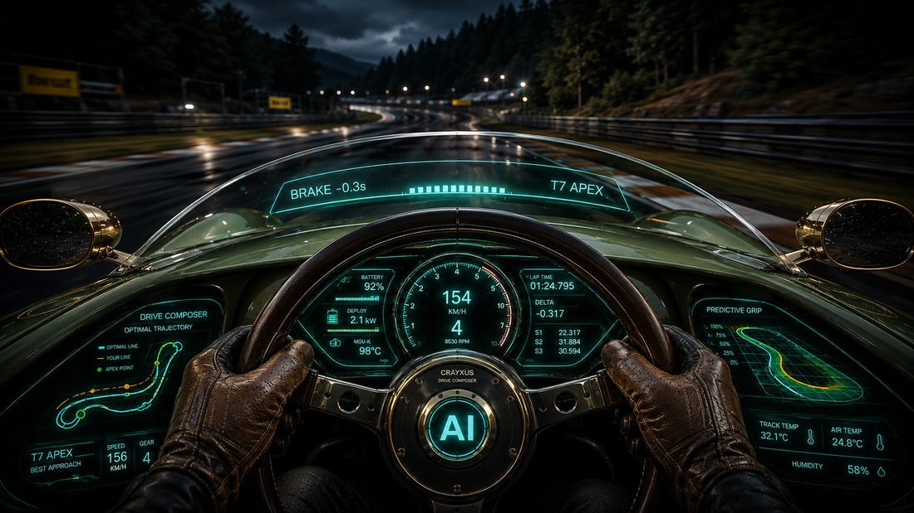
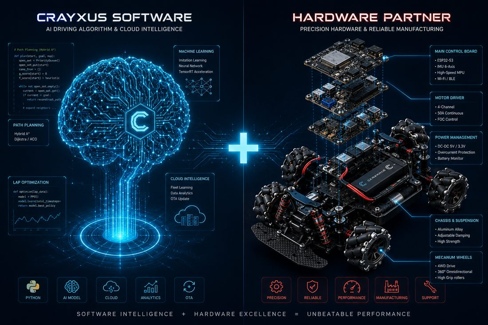
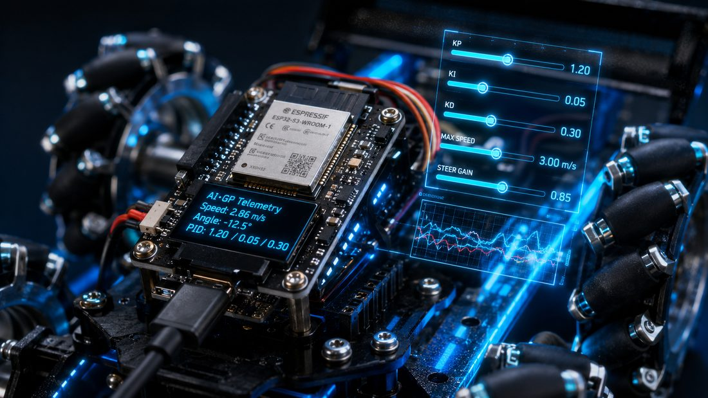
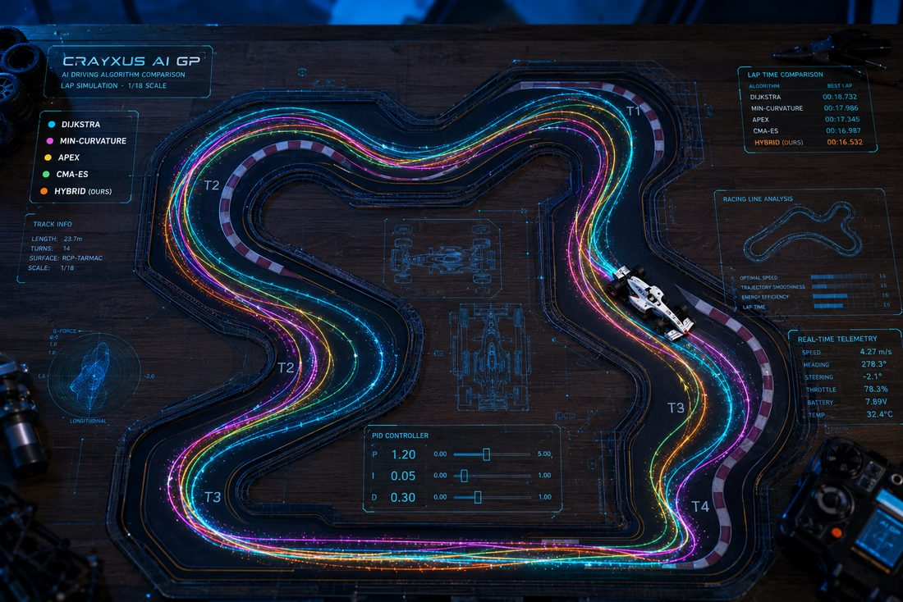
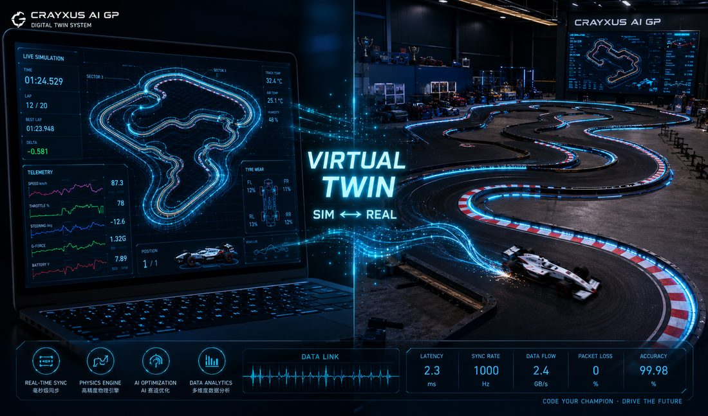
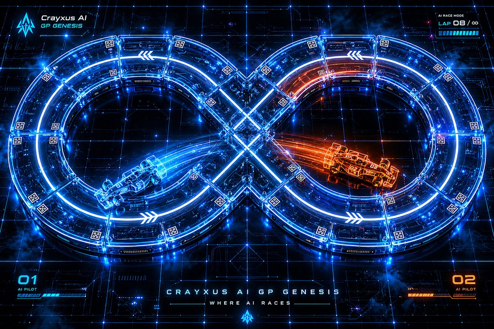
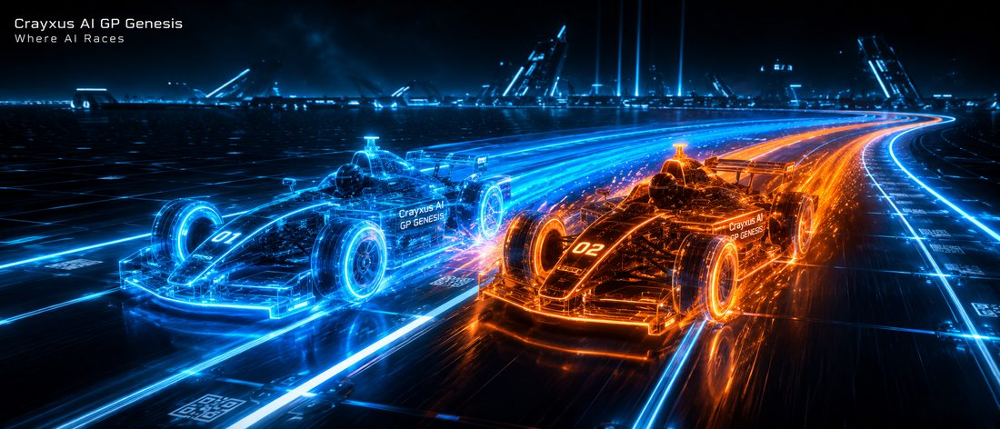

CRAYXUS AI·GP | ONE-HOUR PANORAMA
一年,亲手造出
击败人类的 AI 赛车
从 0 基础到人机对决——四个阶段的完整技术之旅
🎓 浙江大学 AI 教授团队 学术指导
🏭 中天模型 赛事 · 整车支持
TODAY
从「它能跑」,到「它如何被构建」
上次的演示验证了结果。今天一小时,讲透三个问题——三页流程图,一页一个答案:
- ❶ 完整技术路线——这台 AI 赛车如何被构建
- ❷ 能力阶梯——每个阶段,学员亲手习得什么
- ❸ 成果与履历——一年结束,沉淀下什么

AI 驾驶座舱视角——这一年,孩子坐进"工程师席"
❶ 它是怎么被造出来的 · 完整技术流程
七步,从一张图到击败人类
七个环节均由学员亲手完成——系统从「感知」进化到「制胜」。
❷ 每个阶段学到什么 · 能力阶梯
四级跳:看懂 → 教会 → 超越 → 制胜
🔍
T1 看懂
视觉感知 + 提示词 / vibe coding
会调"眼睛"、会指挥 AI 写代码
🎓
T2 教会
神经网络 + 数据思维
会采数据、会训模型、会读 loss
⚡
T3 超越
强化学习 + 实验方法
会设奖励、会做受控实验
🏆
T4 制胜
工程整合 + 科研表达
会调到极限、会写报告会答辩
赛车是载体,内核是 AI 工程能力 + 科研方法论——完全可迁移。
❸ 一年结束,手里留下什么 · 成果与履历
成果逐阶段沉淀,最终构成完整履历
🚗
T1 留下
自己调好的 AI 赛车(归他)
+ L1–L2 认证
🧠
T2 留下
自己训练的模型
+ 官方圈速 + L3 认证
🎖️
T4 留下
赛事证书 + 教授推荐信
+ 研究报告 + Race Day 战绩
每一项成果都有数据与实物支撑——经得起任何申请审查。
THE ROADMAP
一年,四个台阶
每周 2 小时 · 全年约 40 周 · 课上完成,不留作业
T1 · 第 1–3 月
让车动
看懂 AI 自动驾驶,亲手调出车的"眼睛"
T2 · 第 4–6 月
训模型
用自己采的数据,训练第一个开车的 AI
T3 · 第 7–9 月
攻单圈
强化学习 + 最优赛车线,圈速逼近人类
T4 · 第 10–12 月
击败人类
人机对决 + 赛事证书 + 教授推荐信
BY THE NUMBERS
这一年,用数字说
40 周教学计划全部排定——以下分阶段展示。
HOW IT WORKS
自动驾驶 = 眼睛 + 大脑
- 📷 眼睛:车头摄像头,看见赛道边线
- 🧠 大脑:神经网络,看到画面就知道怎么开
- 🕹️ 手脚:转向 + 油门,毫秒级执行
与 Tesla / Waymo 同源的技术架构,工程化为学员可完整驾驭的 1/10 体系。

CRAYXUS 软件大脑 × 精密硬件赛车
TWO THREADS
两条主线,贯穿一整年
🛠️ VIBE CODING 主线
不背语法,指挥 AI 写代码
40 周全程使用专业 AI 编程工具,把想法变成能跑的车代码——0 基础造复杂系统。它是什么、长什么样,后面两页专门讲。
🏆 成果 / 证书主线
边学边拿,越往后越硬
每阶段发阶梯认证;后程对接白名单赛事证书 + 浙大教授推荐信 + 科研实践证明——逐阶段兑现。
VIBE CODING · 是什么
Vibe Coding:用说话的方式编程
- 定义:人话说需求 → AI 生成代码 → 人负责想清楚、看懂、验证
- 出处:OpenAI 联创 Karpathy 2025 年提出,已是硅谷日常
- 门槛之变:从背语法,变成会思考
四步法:说清 → 生成 → 读懂 → 验证
VIBE CODING · 真实课堂界面
一句话 → 代码 → 车真的停了
AI 编程助手 · 第 8 周课堂任务
👦 让车在离障碍物 30 厘米以内时自动刹停,并在屏幕上提示
🤖 好的,用激光雷达的前向距离来判断:
dist = lidar.front_distance()
if dist < 0.30:
car.brake()
console.show("⚠ 障碍物 " + dist + " m,已刹停")
▶ 部署到赛车… 成功
▶ 实测:障碍物 0.28 m → 已刹停 ✓ 屏幕提示 ✓
- ① 说清需求
- ② 生成代码
- ③ 读懂每一行
- ④ 验证:28cm,停住
需求 → 代码 → 行为,全链自主。
ENGINEERING
全程零遥控器——工程师的方式
- PC 控制台:启停 · 调参 · 部署 · 急停
- 一键急停 + 失联自动刹停
- 工程标准训练,而非遥控玩具

车端安全中枢:实时遥测 + 参数调校 + 失联自动刹停
TWO CARS
两台赛车,各司其职
🚗 训练车 · T1–T2
室内 AI 赛车
耐操、安全,适合大量试错与采数据。归孩子所有,结业带走——一年的"座驾"和作品载体。
🏎️ 竞速车 · T3–T4
竞速版赛车
高速、室外、厘米级定位。与中天正式赛事同款车型——人机对决时,AI 和人类开的是同一种车,赢了无可争议。
T1 · 第 1–3 月 · ①
看懂 AI · 让车动
- 感知 → 决策 → 控制:自动驾驶全貌
- 视觉感知:标定一双换光线也认路的"眼睛"
- vibe coding:写出「沿边走」「30cm 刹停」两个真实脚本
T1 · 12 周课表(第 1–3 月)
每一周,都排好了
| W1 | 开学第一课:自动驾驶全貌 + 第一次让车跑起来 · 建立科研日志 |
| W2 | 车的眼睛:摄像头与图像——车看到的世界和你不一样 |
| W3–4 | 感知调参:认出赛道蓝边;换光线、换角度,练出鲁棒的"眼睛" |
| W5 | 提示词入门:怎么把需求说清楚,让 AI 替你干活 |
| W6–7 | vibe coding:写出第一个控制脚本——直线行驶刹停 → 沿蓝边走 |
| W8 | 遇障刹停:激光雷达初识,"30 厘米自动刹停"任务 |
| W9–10 | 综合调试:跑完整一圈 → 又稳又顺;故障诊断思维 |
| W11 | 里程碑彩排:自主跑圈 + 避障全流程自己走一遍 |
| W12 | 🏁 T1 里程碑验收:车自主跑一圈 + 遇障停 → 颁 L1–L2 认证 |
T1 · 第 1–3 月 · ②
每周 2 小时,长这样
→
🖐
80′ 动手
调参 / 写脚本 / 上赛道
全部课上完成
📓
25′ 复盘
记科研日志:
做了什么 · 为什么 · 下次怎么改
课内完成 · 不留作业 · 日志即报告底稿。
T1 · 第 1–3 月 · ③
"感知"拆给你看——这就是学生的调参界面
- 🎥 ① 画面:车眼中的世界
- 🔵 ② 认边:滑块抠出边线
- 🛣️ ③ 路线:蓝带 = AI 的判断
- 🎯 ④ 执行:循线 + 遇障停
🖐 现场试一下:你来调 AI 的眼睛
感知调参台 · 学生界面
色相 H198
饱和度下限92
视野裁剪35%
T1 · MILESTONE
M3:感知系统,由他亲手标定
🎯 自主跑圈 + 遇障停 · 📜 L1–L2 认证
每个参数都讲得出为什么——工程,非组装。
T2 · 第 4–6 月 · ①
教车开 · 训练自己的模型
- 从写规则,到用例子教——机器学习的本质
- 模仿学习:你的驾驶数据,就是它的教材
- 对比实验:好教材 vs 烂教材,谁训的车更稳
T2 · 12 周课表(第 4–6 月)
从"写规则"到"教 AI"
| W13 | 什么是机器学习:从"告诉它怎么做"到"给它看例子" |
| W14–15 | 采数据:PC 控制台开车录「画面→方向」;数据质量=教材质量,学会挑样本 |
| W16 | 神经网络是什么:零数学类比课——它怎么从例子里"悟"出规律 |
| W17 | 第一次训练:一键开训,读懂 loss 曲线这张"心电图" |
| W18 | 🔥 部署上车:我训练的模型在开车! |
| W19–20 | 诊断与迭代:它为什么开不好?加数据、清数据、再训练 |
| W21 | 装起跑线计时门:首个官方单圈成绩,从此进步可量化 |
| W22–23 | 刷圈实验:不同模型 / 不同数据集的圈速对比,写进日志 |
| W24 | 🏁 T2 里程碑验收:自己的模型跑出计时圈 → 颁 L3 神经网络训练认证 |
T2 · 第 4–6 月 · ②
机器学习闭环 · 独立跑通
🕹️
① 开车示范
PC 控制台开几圈
录下「画面 → 方向」
📉
③ 一键训练
loss 曲线下降
= AI 在变聪明
与 Tesla 数据引擎同构的四步闭环。
T2 · 第 4–6 月 · ③
loss 曲线:AI 变聪明的心电图
- 曲线下降 = 规律习得
- 停滞 → 诊断:数据量?质量?过拟合?
- AI 工程师的日常核心读物
🖐 现场试一下:采数据 → 一键训练
训练控制台 · my_driver_v3
数据集 1,248 条·Epoch 18 / 30·已用 02:41
▶ 训练中… loss 0.082 ↓ | 完成后自动打包,可一键部署上车
T2 · MILESTONE
「我训练的模型,让车自动跑」
🎯 里程碑:自己的模型上车跑 + 装起跑线计时门,拿到首个官方单圈成绩 · 📜 L3 神经网络训练认证
进步 = 一条可见的圈速曲线,逐月量化。
起跑线计时屏 · LIVE
BEST LAP
22.81 s
LAP 123.42
LAP 2 ⭐22.81
LAP 323.05
▶ 模型 my_driver_v3 · 3 圈 · 零出界 ✓ · 成绩已存入个人档案
T3 · 第 7–9 月 · ①
模仿有上限,超越靠自学
- 模仿上限 = 示范者水平
- 强化学习:设定奖励,自我进化
- 角色升级:示范者 → 规则设计者
T3 · 9 周课表(第 7–9 月)
让 AI 自己练,练到超越示范者
| W25 | 强化学习初识:模仿的天花板在哪,为什么要让 AI 自己试错 |
| W26 | 仿真环境:虚拟赛道跑起来——一晚等于一万圈 |
| W27 | 设计奖励:孩子从"司机教练"升级成"规则设计师" |
| W28 | 最优赛车线:四种算法同台对比,谁算的线更快? |
| W29 | sim2real:仿真练的本事,怎么搬到真车上不走样 |
| W30 | 🔥 竞速版赛车交接 + 室外首跑:厘米级 RTK 定位上线 |
| W31–32 | 受控实验:每周改一个变量 → 跑 → 记录 → 分析,圈速逼近人类基准 |
| W33 | 🏁 T3 验收:圈速曲线汇报 → 进阶认证 + 白名单赛事备赛 |
T3 · 第 7–9 月 · ②
最优赛车线:和 F1 车手同一门学问
- 同弯不同线,出弯速度差 20%
- 算法求解最小曲率线,毫米级复现
- 十年功力的走线,数小时求解——挑战人类的底气

同一条赛道,四种算法各自算出的赛车线——孩子会亲手比较它们谁更快
T3 · 第 7–9 月 · ③
仿真一万圈,真车来验证
- 🖥️ 仿真:一晚一万圈
- 🔧 校准:真车数据补差距
- 🏁 实测:每周受控实验
👀 看一下:AI 在仿真里一轮比一轮快

数字孪生:左边是仿真,右边是真赛道——SIM ↔ REAL
T3 · MILESTONE
装备升级,圈速逼近人类
- 升级竞速版赛车:更快的车 + 室外赛道 + 厘米级 RTK 定位
- 每周做受控实验:改一个变量 → 跑 → 记录 → 分析——真·科研方法
🎯 里程碑:圈速曲线持续下降,逼近人类基准 · 📜 进阶认证 + 白名单赛事备赛

我们的真实实验记录:10.27×4.78m 赛道 · 单圈 22.6 秒 · 规划路径 vs 物理边界
T4 · 第 10–12 月 · ①
人机对决:为什么 AI 能赢
🤖 AI
跑线一致 · 毫米级
零疲劳 · 圈圈如一
毫秒级反应
🧑 人类遥控手
场边遥控 · 无第一视角
凭手感 · 无轮胎极限感知
受疲劳与情绪影响
单圈计时 = AI 的主场。
T4 · 7 周课表(第 10–12 月)
冲线前的最后七周
| W34 | 对决策略:研究赛制与对手,把优势用满 |
| W35–36 | 极限调校:压榨最后零点几秒 + 准备赛事报名材料 |
| W37 | 研究报告:把一年的科研日志,整理成一篇可答辩的研究 |
| W38 | 答辩彩排:讲清楚"我做了什么实验,得到什么结论" |
| W39 | Race Day 总彩排:车、赛道、计时、流程全过一遍 |
| W40 | 🏁🏁 RACE DAY:人机对决 + 现场颁奖 + 研究成果展示——加冕日 |
T4 · 第 10–12 月 · ②
AI 击败人类,业界已经做到
25 : 15
苏黎世 Swift 无人机
击败人类世界冠军,登上 Nature(2023)
+1.58s
A2RL 全尺寸赛车
一年内从落后 10 秒/圈,到单圈反超前 F1 车手
1/10
我们的赛场
同一条技术路线的 1/10 版。单圈有充分把握;多车缠斗是全球前沿——天花板高,正是科研价值所在
T4 · 第 10–12 月 · ③
🏁 毕业战:Race Day
- 同款车 · 同条道 · AI 对阵真人
- 全程影像留档 · 长期传播资产
- 现场颁奖 · 一年训练的加冕

WHERE AI RACES——人机同场,蓝橙对决
T4 · OUTCOME
一年终点,手里有四样硬东西
- 🏆 白名单赛事证书——升学审查真正认的硬通货
- ✍️ 浙大教授推荐信 + 科研实践证明——基于他真实的实验与答辩
- 📄 一份可答辩的研究报告——科研日志全年累积而成,经得起任何提问
- 🎬 Race Day 战绩与影像——「我的 AI 在正式赛道击败了人类」
EVIDENCE · 成果长这样
科研日志和研究,不是空话
科研日志真实条目(W31,受控实验周):
2026-10-XX · 实验 #14
把奖励函数里的"出界惩罚"从 -10 调到 -50:圈速慢了 0.8 秒,但 20 圈零出界。
结论:稳定性和速度是一对权衡。下周试 -30 找平衡点。
- 期末研究题目示例:《不同赛车线算法对 1/10 AI 赛车圈速的影响》《训练数据质量对驾驶稳定性的影响》《仿真与真实的差距来源及补偿》
- 40 周日志自动累积 → 期末整理就是报告——答辩时每一句都有自己的数据撑着
RECAP
四个阶段,四件留在手里的成果
全部真实 · 可展示 · 可答辩。
SUPPORT
谁在背后撑住这一年
学术
🎓 浙大 AI 教授团队
课程与考核体系审定 · 期末答辩评审 · 为真实成果出具推荐信
产业
🏭 中天模型
赛事同款整车与原厂配件 · 标准赛道场地 · 正式赛事组别入口
平台
⚙️ CRAYXUS Turnkey
车载系统、训练管线、仿真环境开箱即用——平台扛 90% 底层,孩子做最有意义的 10%
🚥 红线:只背书真实工作。
SAFETY
家长最关心的:安全
- 软件锁速 · 步行速度
- 三重保护:急停 + 失联刹停 + 物理断电
- 1/10 无人载具 · 零人身风险
- 低压电池 · 统一存放
RHYTHM
学业重的孩子,也跟得上
- 每周 2h · 课内完成 · 不留作业
- 家里零装备(算力在教室与云端)
- 课外可预约加练
- 数据档案自动累积 → 期末成果
INVESTMENT
学费与装备
| 一年课程(每周 2h · 浙大教授指导 · 证书赛事对接) | ¥100,000 |
| 自己的 AI 赛车(必配 · 归孩子所有 · 结业带走) | ¥9,800 |
| 竞速版赛车(选配 · 第 6 月再决定,不选用教具车) | ¥32,800 |
★ 试点特权:正式班需分摊的场地设备(计时系统 / 定位 / 算力,人均 2 万+),试点期全部由我们承担。
Q & A
家长常问的三件事
- "0 基础跟得上吗?"——跟得上。vibe coding 不背语法,平台扛底层,第一节课就能让车动起来
- "这不就是玩车吗?"——载体是车,学的是 AI 核心:感知、神经网络、强化学习、实验方法——全部可迁移
- "一年之后呢?"——车手段位、赛季赛事、研究课题持续开放;这一年的作品集和数据档案,是他以后所有申请的底牌
NEXT
下周第一课,
就从今天那个滑块开始
第一步,今天已完成。
📅 开课时间:本周内敲定
🏎️ Code Your Champion. Drive the Future.

← → 或点击翻页 · F11 全屏